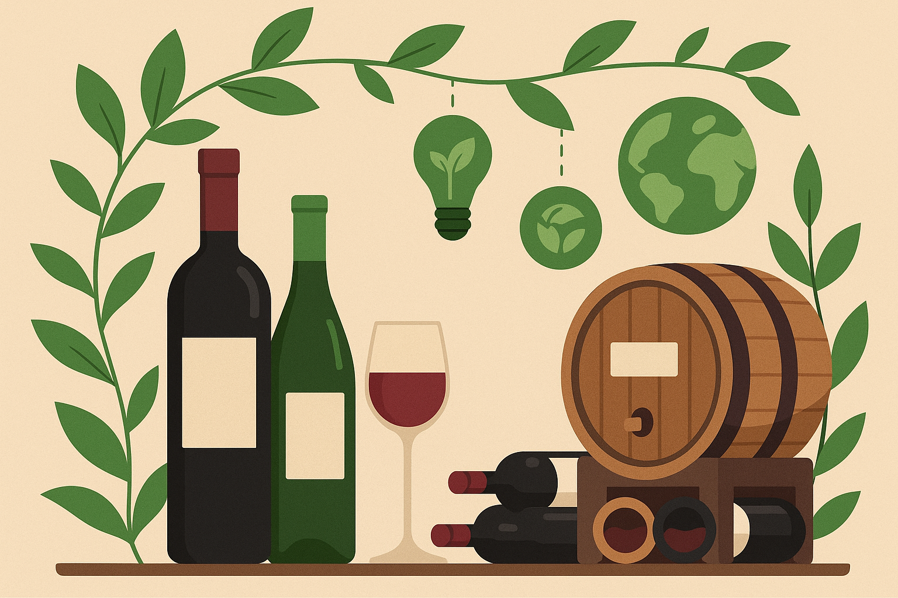

Práticas Ecológicas para Sua Adega
Uma adega bem planejada protege suas garrafas e o planeta. Siga estas dicas para construir e manter um espaço sustentável:
- Isolamento eficiente: Isole adequadamente paredes e portas para reduzir a energia necessária para o resfriamento. Um bom isolamento ajuda a manter uma temperatura e umidade estáveis.
- Refrigeração de baixo consumo: Escolha unidades de refrigeração com alta eficiência energética e considere modelos que utilizam refrigerantes ecológicos. A manutenção regular garante que funcionem de forma eficiente.
- Iluminação LED: Use lâmpadas LED que emitem pouco calor e consomem menos energia que as incandescentes. Sensores de movimento ou temporizadores evitam que as luzes fiquem acesas sem necessidade.
- Materiais reaproveitados: Construa prateleiras e suportes com madeira de demolição ou materiais de origem sustentável. Evite plásticos e produtos químicos que possam liberar odores próximos aos seus vinhos.
- Monitoramento inteligente: Utilize sensores para acompanhar temperatura e umidade. Alertas automáticos podem avisar quando as condições saírem do ideal, permitindo ajustes rápidos.
- Reduza o desperdício: Reutilize caixas, garrafas e rolhas de forma criativa ou recicle adequadamente. Apoiar vinícolas com práticas sustentáveis também faz a diferença.